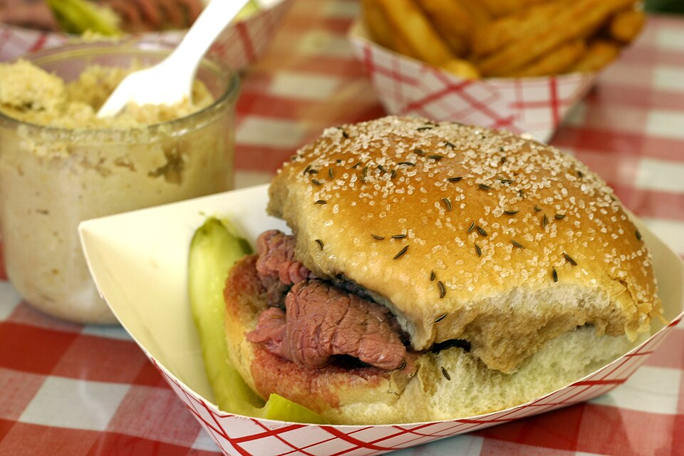

Authentic Kummelweck Rolls
Baking authentic kummelweck rolls crusted in caraway seeds and kosher salt, loaded with tender au jus-dipped roast beef and freshly grated hot horseradish.
Explore Beef on Weck →Welcome to Tavern on the Tracks, South End Charlotte’s iconic neighborhood sports pub and Buffalo culinary headquarters since 2002. Located at 1411 South Tryon Street along the LYNX Blue Line Rail Trail, we serve the Queen City’s premier Beef on Weck on salted caraway kummelweck rolls, crispy jumbo wings tossed in signature Gold Rush sauce, and ice-cold craft pints.

Unmatched tavern staples and spirited community gatherings since 2002.
Baking authentic kummelweck rolls crusted in caraway seeds and kosher salt, loaded with tender au jus-dipped roast beef and freshly grated hot horseradish.
Explore Beef on Weck →Jumbo chicken wings fried extra crispy and tossed in house sauces, including our famous Gold Rush honey-mustard barbecue, mild, medium, and hot.
Discover Wings →Charlotte's premier sports pub featuring wall-to-wall HD screens, cold regional draft beers, shaded Rail Trail patio seating, and electric game-day energy.
Game Day Directives →Our famous jumbo wings are cooked to order, achieving a shatteringly crisp skin while keeping the interior juicy. Tossed in our signature Gold Rush sauce—a secret blend of sweet clover honey, tangy yellow mustard, smoky barbecue, and cayenne—served with crisp celery and thick chunky blue cheese.
Explore Wings Lineup →

Whether cooling down after a walk along the Rail Trail or celebrating a victory, our taps pour crisp Carolina IPAs, Upstate New York favorites like Labatt Blue, and handcrafted cocktails including our famous house Bloody Mary.
Explore Bar Craft →Open daily until midnight during the week and 2:00 AM on Friday and Saturday. Steps from the Bland Street LYNX station with walk-ins welcomed anytime.
Hours, Transit & Location Details →